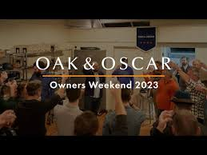
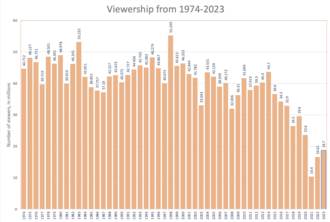

The first Academy Awards presentation was held on May 16, 1929, at a private dinner function at The Hollywood Roosevelt Hotel, with an audience of about 270 people. The post-awards party was held at the Mayfair Hotel.The cost of guest tickets for that night's ceremony was $5 - $89 at 2023 prices. Fifteen statuettes were awarded, honoring artists, directors, and other participants in the film-making industry of the time, for their works during the 1927–28 period. The ceremony ran for 15 minutes.
For this first ceremony, winners were announced to the media three months earlier. For the second ceremony in 1930, and the rest of the first decade, the results were given to newspapers for publication at 11:00 pm on the night of the awards. In 1940, the Los Angeles Times announced the winners before the ceremony began. As a result, in 1941 the Academy started using a sealed envelope to reveal the names of the winners.The term "Oscar" is a registered trademark of the AMPAS. In the Italian language, it is used generically to refer to any award or award ceremony, regardless of which field
Milestone
The first Best Actor awarded was Emil Jannings, for his performances in The Last Command and The Way of All Flesh. As he had to return to Europe before the ceremony, the Academy agreed to give him the prize early, making him the first Academy Award recipient. For the first Awards, winners were recognized for multiple films during the qualifying period; Jannings received the award for two movies in which he starred , and Janet Gaynor won the first Best Actress award for performances in three films. Beginning with the second ceremony, performers received separate nominations for individual films; no performer has received multiple nominations in the same category since the 3rd Academy Awards.
Oscar statuette
Overview
The Oscar statuette, officially the Academy Award of Merit,is given to winners of each year's awards. Made of gold-plated bronze on a black metal base, it is 13.5 in (34.3 cm) tall, weighs 8.5 lb (3.856 kg), and depicts a knight rendered in Art Deco style holding a sword standing on a reel of film with five spokes. The five spokes represent the original branches of the Academy: Actors, Writers, Directors, Producers, and Technicians.Sculptor George Stanley, who also did the Muse Fountain at the Hollywood Bowl, sculpted Cedric Gibbons' design. The statuettes presented at the initial ceremonies were gold-plated solid bronze. Within a few years, the bronze was abandoned in favor of Britannia metal, a pewter-like alloy which is then plated in copper, nickel silver, and finally, 24-karat gold.Due to a metal shortage during World War II, Oscars were made of painted plaster for three years. Following the war, the Academy invited recipients to redeem the plaster figures for gold-plated metal ones
The only addition to the Oscar since it was created is a minor streamlining of the base. The original Oscar mold was cast in 1928 at the C.W. Shumway & Sons Foundry in Batavia, Illinois, which also contributed to casting the molds for the Vince Lombardi Trophy and Emmy Award statuettes. From 1983 to 2015,[21] approximately 50 Oscars in a tin alloy with gold plating were made each year in Chicago by Illinois manufacturer R.S. Owens & Company.[22] It would take between three and four weeks to manufacture 50 statuettes
In 2016, the Academy returned to bronze as the core metal of the statuettes, handing manufacturing duties to Walden, New York–based Polich Tallix Fine Art Foundry, now owned and operated by UAP Urban Art Projects.[24][25] While based on a digital scan of an original 1929 Oscar, the statuettes retain their modern-era dimensions and black pedestal. Cast in liquid bronze from 3D-printed ceramic molds and polished, they are then electroplated in 24-karat gold by Brooklyn, New York–based Epner Technology. The time required to produce 50 such statuettes is roughly three months.[26] R.S. Owens is expected to continue producing other awards for the Academy, and service existing Oscars that need replating
Ownership of Oscar statuettes
Prior to 1950, Oscar statuettes were, and remain, the property of the recipient.[36] Since then the statuettes have been legally encumbered by the requirement that the statuette be first offered for sale back to the Academy for US$1. If a winner refuses to agree to this stipulation, then the Academy keeps the statuette. Academy Awards predating this agreement have been sold in public auctions and private deals for six-figure sumsIn 1989, Michael Todd's grandson tried to sell Todd's Best Picture Oscar for his 1956 production of Around the World in 80 Days to a movie prop collector. The Academy earned enforcement of its statuette contract by gaining a permanent injunction against the sale.
In 1992, Harold Russell consigned his 1946 Oscar for Best Supporting Actor for The Best Years of Our Lives to auction to raise money for his wife's medical expenses. Though his decision caused controversy, the first Oscar ever to be sold passed to a private collector on August 6, 1992, for $60,500 ($131,400 today). Russell defended his action, saying, "I don't know why anybody would be critical. My wife's health is much more important than sentimental reasons. The movie will be here, even if Oscar isn't".

Other awards presented by the Academy
In addition to the Academy Award of Merit (Oscar award), there are nine honorary (non-competitive) awards presented by the Academy from time to time (except for the Academy Honorary Award, the Technical Achievement Award, and the Student Academy Awards, which are presented annually)
Governors Awards
The Academy Honorary Award (annual) (which may or may not be in the form of an Oscar statuette);
The Irving G. Thalberg Memorial Award (since 1938) (in the form of a bust of Thalberg);
The Jean Hersholt Humanitarian Award (since 1957) (in the form of an Oscar statuette);
The Academy Scientific and Technical Awards:
Academy Award of Merit (non-competitive) (in the form of an Oscar statuette);
Scientific and Engineering Award (in the form of a bronze tablet);
Technical Achievement Award (annual) (in the form of a certificate);
The John A. Bonner Medal of Commendation (since 1978) (in the form of a medal);
The Gordon E. Sawyer Award (since 1982);
Nomination
From 2004 to 2020, the Academy Award nomination results were announced to the public in mid-January. Prior to that, the results were announced in early February. In 2021, the nominees were announced in March. In 2022, the nominees were announced in early February for the first time since 2003.
VOTES
The Academy of Motion Picture Arts and Sciences (AMPAS), a professional honorary organization, maintains a voting membership of 9,487 as of 2022.Academy membership is divided into different branches, with each representing a different discipline in film production. As of 2022, actors constitute the largest bloc, numbering 1,359 (14.1% of the voting body).Votes have been certified by the auditing firm PricewaterhouseCoopers, and its predecessor Price Waterhouse, since the 7th Academy Awards in 1935. In May 2011, the Academy sent a letter advising its 6,000 or so voting members that an online system for Oscar voting would be implemented in 2013, replacing mailed paper ballots
All AMPAS members must be invited to join by the Board of Governors, on behalf of Academy Branch Executive Committees. Membership eligibility may be achieved by a competitive nomination, or an existing member may submit a name, based on other significant contributions to the field of motion pictures.
New membership proposals are considered annually. The Academy does not publicly disclose its membership, although as recently as 2007 press releases have announced the names of those who have been invited to join
Award Cerimonies
Telecast
The major awards are presented at a live televised ceremony, commonly in late February or early March following the relevant calendar year, and six weeks after the announcement of the nominees. It is the culmination of the film awards season, which usually begins during November or December of the previous year. This is an elaborate extravaganza, with the invited guests walking up the red carpet in the creations of the most prominent fashion designers of the day. Black tie dress is the most common outfit for men. Fashion may dictate not wearing a bow-tie, and musical performers are sometimes not required to adhere to this. The artists who recorded the nominees for Best Original Song quite often perform those songs live at the awards ceremony, and the fact that they are performing is often used to promote the television broadcast. The Academy Awards is the world's longest-running awards show televised live from the United States to all time zones in North America and worldwide, and gathers billions of viewers elsewhere throughout the world.[68] The Oscars were first televised in 1953 by NBC, which continued to broadcast the event until 1960, when ABC took over, televising the festivities, including the first color broadcast of the event in 1966, to 1970. NBC regained the rights for five years (1971–75), then ABC resumed broadcast duties in 1976 and its current contract with the Academy runs through 2028
The Academy has produced condensed versions of the ceremony for broadcast in international markets, especially those outside of the Americas, in more desirable local timeslots. The ceremony was broadcast live internationally for the first time via satellite since 1970, but only two South American countries, Chile and Brazil, purchased the rights to air the broadcast. By that time, the television rights to the Academy Awards had been sold in 50 countries. In 1980, the rights were sold to 60 countries, and by 1984, the television rights to the Academy Awards were licensed in 76 countries.
TV Ratings
Historically, the telecast's viewership is higher when box-office hits are favored to win the Best Picture award. More than 57.25 million viewers tuned to the telecast for the 70th Academy Awards in 1998, the year of Titanic, which generated a box office haul during its initial 1997–98 run of US$600.8 million in the US, a box-office record that would remain unsurpassed for years.[89] The 76th Academy Awards ceremony, in which The Lord of the Rings: The Return of the King (pre-telecast box office earnings of US$368 million) received 11 Awards, including Best Picture, drew 43.56 million viewers.[90] The most-watched ceremony based on Nielsen ratings to date, was the 42nd Academy Awards (Best Picture Midnight Cowboy), which drew a 43.4% household rating on April 7, 1970.[91] Hoping to reinvigorate the pre-show and ratings, the 2023 Oscars organizers hired members of the Met Gala creative team

Venues
In 1929, the first Academy Awards were presented at a banquet dinner at The Hollywood Roosevelt Hotel. From 1930 to 1943, the ceremony alternated between two venues: the Ambassador Hotel on Wilshire Boulevard and the Biltmore Hotel in downtown Los Angeles.Grauman's Chinese Theatre in Hollywood then hosted the awards from 1944 to 1946, followed by the Shrine Auditorium in Los Angeles from 1947 to 1948. The 21st Academy Awards in 1949 were held at the Academy Award Theatre at what had been the Academy's headquarters on Melrose Avenue in Hollywood.
From 1950 to 1960, the awards were presented at Hollywood's Pantages Theatre. With the advent of television, the awards from 1953 to 1957 took place simultaneously in Hollywood and New York, first at the NBC International Theatre (1953) and then at the NBC Century Theatre, after which the ceremony took place solely in Los Angeles. In 1961, the Oscars moved to the Santa Monica Civic Auditorium in Santa Monica, California. In 1969, the Academy moved the ceremonies back to Downtown Los Angeles, to the Dorothy Chandler Pavilion at the Los Angeles County Music Center. In the late 1990s and early 2000s, the ceremony returned to the Shrine Auditorium.
.jpeg)